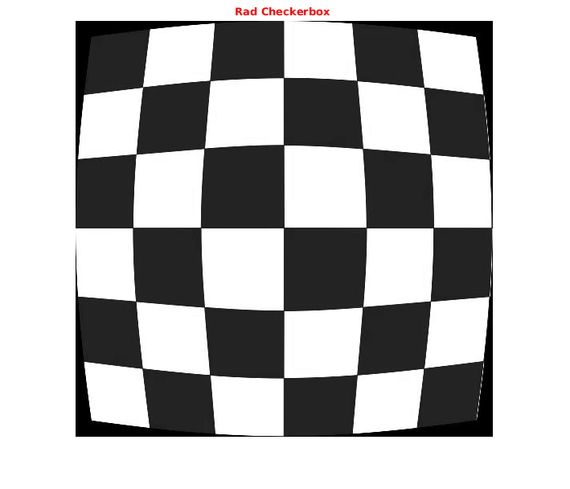
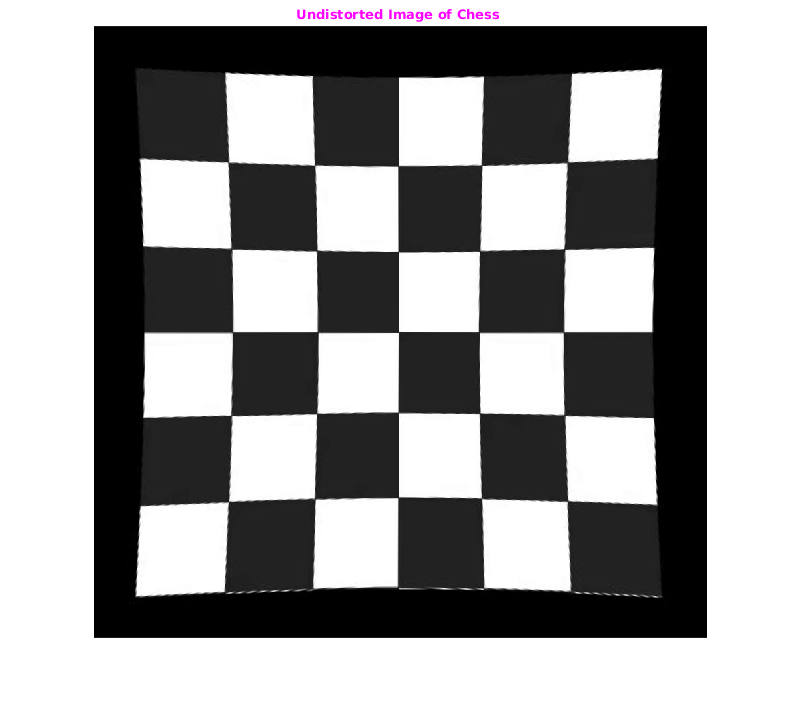

Assign1-2 Barrel Distortion
Roll number: 163059009, 16305R011, 16305R001
Contents
Init
tic;
checkerboard='../input/rad_checkerbox.jpg';
cmGray256=gray(256);
img=imread(checkerboard);
img=img(:,:,1);
dim=size(img);
row=dim(1);col=dim(2);
toc
Elapsed time is 0.011496 seconds.
Showing Original image
Size of Img: 517 519 3
tic; figure('name','Original Image'); imshow(img,colormap(cmGray256)),daspect([1,1,1]); title('\fontsize{10}{\color{red}Rad Checkerbox }'); toc;
Elapsed time is 0.224638 seconds.
Inversion of radial distortion
Removing the radial distortion from the image using the iterative method
tic
[outImg]=reverseBarrelDistortion(img);
fprintf('Done.');
toc
Done.Elapsed time is 26.545862 seconds.
Showng Result
figure('name','out'); imshow(outImg,colormap(cmGray256)),daspect([1,1,1]); title('\fontsize{10}{\color{magenta}Undistorted Image of Chess }');
